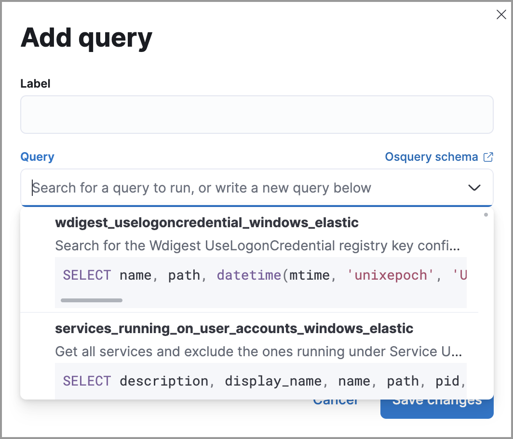
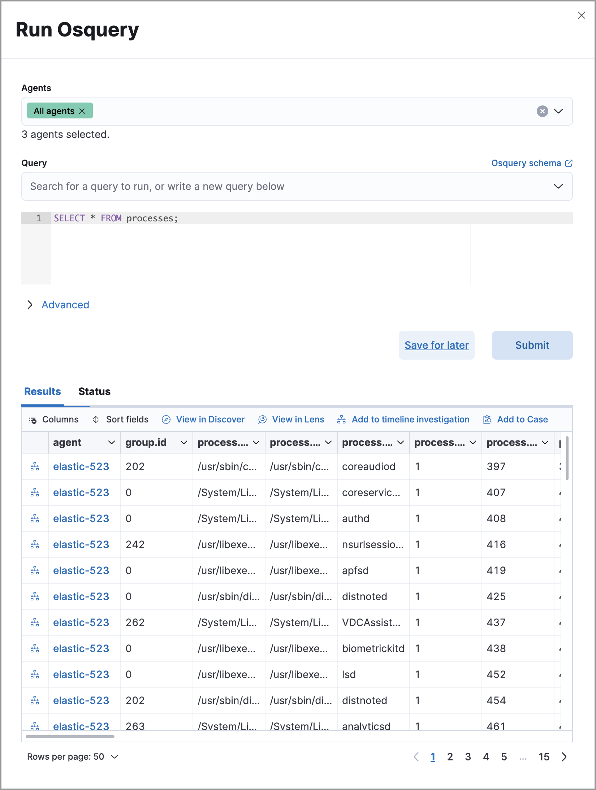

Run Osquery from investigation guides
editDetection rule investigation guides suggest steps for triaging, analyzing, and responding to potential security issues. When you build a custom rule, you can also set up an investigation guide that incorporates Osquery. This allows you to run live queries from a rule’s investigation guide as you analyze alerts produced by the rule.
Requirements
- The Osquery manager integration must be installed.
-
Elastic Agent’s status must be
Healthy. Refer to Fleet Troubleshooting if it isn’t. - You must have the appropriate user role to use this feature.
Add live queries to an investigation guide
editYou can only add Osquery to investigation guides for custom rules because prebuilt rules cannot be edited.
- Go to Rules → Detection rules (SIEM), select a rule, then click Edit rule settings on the rule details page.
- Select the About tab, then expand the rule’s advanced settings.
-
Scroll down to the Investigation guide section. In the toolbar, click the Osquery button ().
-
Add a descriptive label for the query; for example,
Search for executables. -
Select a saved query or enter a new one.
Use placeholder fields to dynamically add existing alert data to your query.
-
Expand the Advanced section to set a timeout period for the query, and view or set mapped ECS fields included in the results from the live query (optional).
Overwriting the query’s default timeout period allows you to support queries that take longer to run. The default and minimum supported value for the Timeout field is
60. The maximum supported value is900.[height=70%][Shows results from running a query from an investigation guide]
-
Add a descriptive label for the query; for example,
- Click Save changes to add the query to the rule’s investigation guide.
Run live queries from an investigation guide
edit- Go to Rules → Detection rules (SIEM), then select a rule to open its details.
- Go to the About section of the rule details page and click Investigation guide.
-
Click the query. The Run Osquery pane displays with the Query field autofilled. Do the following:
- Select one or more Elastic Agents or groups to query. Start typing in the search field to get suggestions for Elastic Agents by name, ID, platform, and policy.
-
Expand the Advanced section to set a timeout period for the query, and view or set the mapped ECS fields which are included in the live query’s results (optional).
Overwriting the query’s default timeout period allows you to support queries that take longer to run. The default and minimum supported value for the Timeout field is
60. The maximum supported value is900.
-
Click Submit to run the query. Query results display in the flyout.
Refer to Examine Osquery results for more information about query results.
-
Click Save for later to save the query for future use (optional).
[height=80%][Shows results from running a query from an investigation guide]